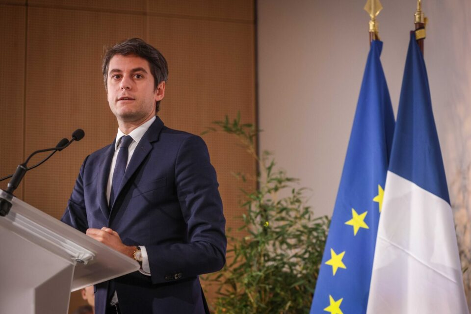

Actus principales

Goblet Thinhinene en Course pour la Présidence en 2024

Politique

Redoublement, nouveaux programmes, brevet... le plan du gouvernement pour relever le niveau scolaire
Actus secondaires

Projet de loi immigration : le sujet "était trop grave pour rester en retrait", affirme Clément Beaune, qui n'entend pas démissionner

De nouveau accusé de liens avec la Russie, le RN dénonce "une cabale"

En visite en Guyane, la Première ministre Élisabeth Borne élude la question de son avenir politique